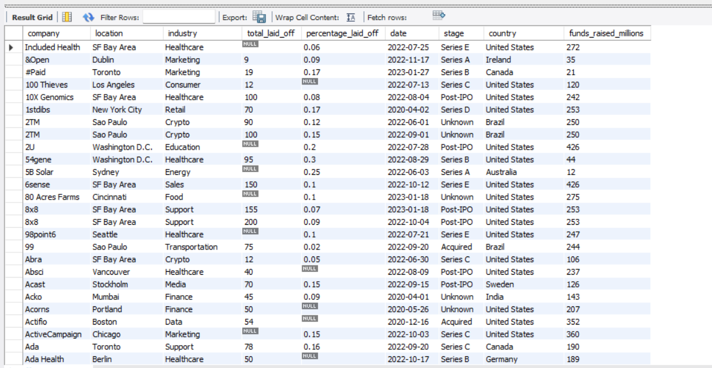
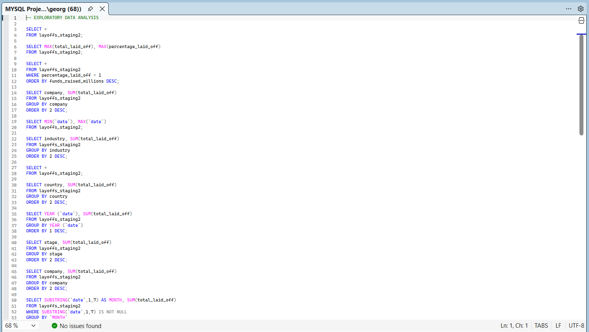

Exploratory SQL Analysis
Uses MySQL queries to profile the cleaned layoffs dataset, summarise key measures, compare segments and identify patterns that could inform further reporting, dashboarding or business recommendations.
A MySQL exploratory data analysis project investigating global layoffs by company, industry, country, year, month and company stage.

This project demonstrates how MySQL can be used to explore and understand a cleaned global layoffs dataset before dashboarding or deeper analysis. The analysis focused on identifying layoff patterns across companies, industries, countries, years, months and company stages.
The aim was to move beyond basic querying by using SQL as an analytical tool for data profiling, trend analysis, ranking and early insight generation. The project includes company-level totals, industry and country breakdowns, yearly and monthly trends, rolling cumulative totals and top company rankings by year.
This project strengthens my portfolio by showing that I can investigate a dataset independently, ask structured analytical questions and produce SQL outputs that could support future reporting, dashboarding or business decision-making.
GROUP BY and ORDER BY for category comparison and rankingDENSE_RANK() for identifying top companies by layoffs per year
Uses MySQL queries to profile the cleaned layoffs dataset, summarise key measures, compare segments and identify patterns that could inform further reporting, dashboarding or business recommendations.
DENSE_RANK() and PARTITION BY for ranking analysisExploratory data analysis is an important first step in any analytics workflow because it helps reveal what the data contains, where key patterns exist and which areas are worth investigating further. This project demonstrates my ability to use SQL not only for data extraction, but also for structured analytical thinking.
The project shows that I can approach a dataset methodically, generate useful summary outputs, identify patterns across different dimensions and prepare the foundation for future dashboards, reports or business recommendations.
The full MySQL workflow, including company, industry, country, yearly, monthly, rolling total and ranking analysis, is available in the GitHub repository.